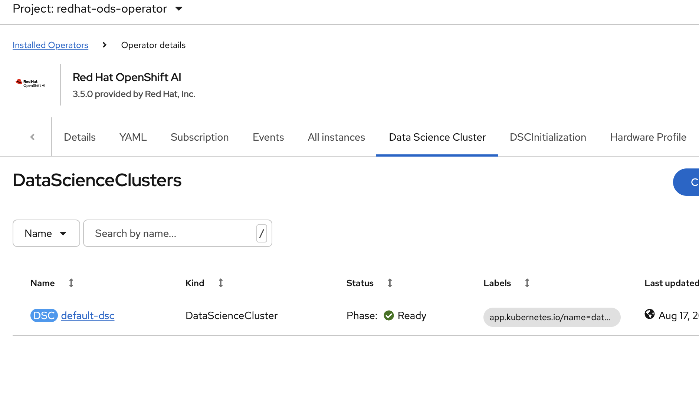
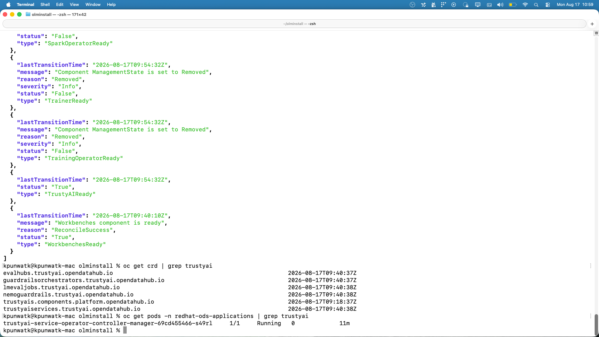
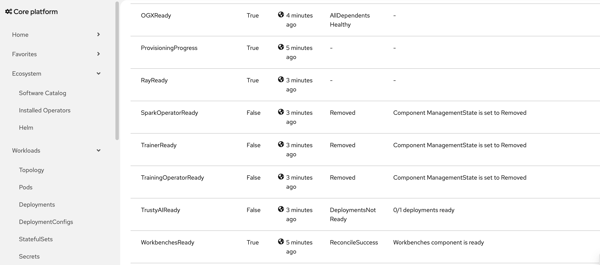

Via OLM Manual Way & Through Claude Code Skills
quay.io/rhoai/rhoai-fbc-fragment:rhoai-<release-version>@sha256:<digest>oc CLI installed and logged in┌─────────────────────────────────────────────────┐
│ openshift-marketplace │
│ ┌─────────────────────────────────────────┐ │
│ │ CatalogSource (rhoai-catalog-dev) │ │
│ └──────────────────┬──────────────────────┘ │
└─────────────────────┼───────────────────────────┘
▼
┌─────────────────────────────────────────────────┐
│ redhat-ods-operator │
│ Subscription → InstallPlan → CSV → Operator │
└──────────────────────┬──────────────────────────┘
▼
┌─────────────────────────────────────────────────┐
│ redhat-ods-applications │
│ DataScienceCluster → Components │
│ (Dashboard, KServe, TrustyAI, ModelRegistry) │
└─────────────────────────────────────────────────┘The rhoai-devops-bot posts nightly build images to Slack channel #rhoai-build-notifications:
Slack Channel: #rhoai-build-notifications
Bot Message:
A new Nightly Build is available for RHOAI v3.5.0
Image:
quay.io/rhoai/rhoai-fbc-fragment:rhoai-<release-version>@sha256:<digest>Commit:
a921bd2
Copy the Image URL for the next step.
Output:
namespace/redhat-ods-operator created
catalogsource.operators.coreos.com/rhoai-catalog-dev created
operatorgroup.operators.coreos.com/rhoai-operator-dev created
subscription.operators.coreos.com/rhoai-operator-dev createdNavigate to:
redhat-ods-operator./create-dsc.shOnce created, verify:
redhat-ods-applications are Running/Completed

TrustyAI is stable when: TrustyAIReady: True, CRDs exist, and pod is Running
# Check DSC component conditions
oc get datasciencecluster -o jsonpath='{.items[0].status.conditions}' | jq .
# Verify TrustyAI CRDs are installed
oc get crd | grep trustyai
# Check TrustyAI operator pod is running
oc get pods -n redhat-ods-applications | grep trustyai
# Check DSC and DSCI status
oc get datasciencecluster -A
oc get dsci -AHandles: stuck namespaces, CRDs, orphaned webhooks, operator resources
| Problem | Solution |
|---|---|
Pods stuck in Pending |
Check node resources |
CSV not Succeeded |
Check InstallPlan approval |
Namespace stuck Terminating |
./remove-stuck-crds.sh |
| CatalogSource not ready | Check image pull access |

Symptom: DSC shows DeploymentsNotReady for TrustyAI even though pods are running
Root cause: Image pull secret or ServiceAccount gets regenerated, causing a transient pod failure. The pod self-heals, but rhods-operator never re-reconciles — so the DSC shows stale status.
Fix:
This forces a fresh reconcile → controller sees healthy deployment → flips TrustyAIReady: True
Symptom: Subscription fails to resolve — no InstallPlan created, operator never installs
Root cause: The catalog image (e.g., a 3.6 EA build) doesn’t publish the channel you specified (e.g., stable-3.6). EA/nightly builds often only exist in the beta channel.
Fix:
Prevention: Use the correct -u flag when running setup:
Check available channels before installing:
Resources:
olminstallCOMPLETE-CLEANUP-README.mdThank you!
RHOAI Nightly Installation